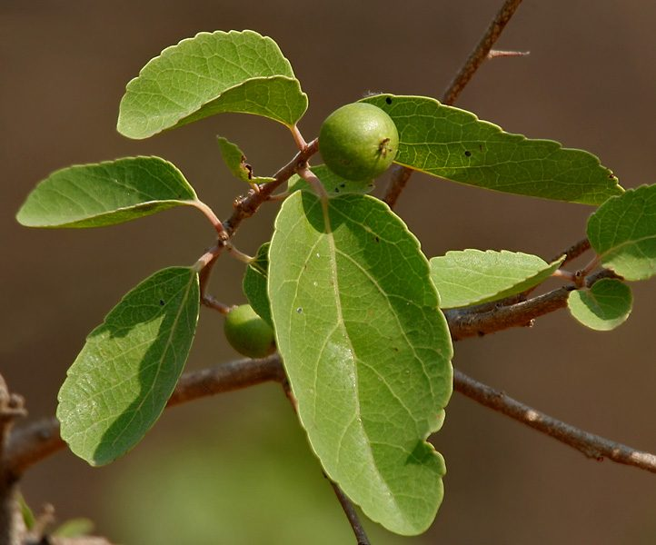

गवर्नर्स प्लमGovernor's Plum
Flacourtia indica · Salicaceae · FLR-0320

- Scientific name वैज्ञानिक नाम
- Flacourtia indica (Burm.fil.) Merr.
- Family कुल
- Salicaceae
- Hindi हिंदी
- गवर्नर्स प्लम
- Local names स्थानीय नाम
- governors plum, kantai, paniala, ramontchi, baichi
- Status here यहाँ की स्थिति
- native
- Movement आवागमन
- Resident, here all year
- Known from कहाँ दर्ज
- Others have published records from the wider Awadh–Purvanchal plain, none yet from Basti–Ayodhya अवध–पूर्वांचल से दूसरों के प्रकाशित अभिलेख, बस्ती–अयोध्या से अभी नहीं
- IUCN IUCN
- not evaluated
- Review समीक्षा
- not yet reviewed
When to look कब देखें
Present all year. साल भर मौजूद।
Uses and possibilities उपयोग और संभावनाएँ
“Traditional medicine” means a documented traditional use, not a claim that it works. Nothing on this page is medical advice.
Drawn from the documented uses in the profile below, where each is labelled traditional, current or a research lead. All uses →
Tell it apart from इनसे अलग पहचानें
गवर्नर्स प्लम / Governor's Plum
Flacourtia indica (Burm.fil.) Merr. — Salicaceae
गवर्नर्स प्लम — अवध के जंगलों और बीहड़ों का एक काँटेदार छोटा वृक्ष या बड़ी झाड़ी, जिसे स्थानीय भाषा में 'कंतई' या 'बैची' भी कहते हैं। इसके तने और पुरानी डालियों पर बड़े-बड़े नुकीले काँटे होते हैं, जिनमें कभी-कभी शाखाएं भी फूट आती हैं। गर्मियों में इसके बेर जैसे गहरे लाल-बैंगनी फल पकते हैं, जो खट्टे-मीठे और स्वादिष्ट होते हैं।
Quick Identification त्वरित पहचान
| Feature | Description |
|---|---|
| Habit | Spiny deciduous small tree or large bushy shrub 5–10 m tall (Duthie 1903) |
| Armature | Trunk and branches armed with stout, sharp woody spines up to 5 cm long (Duthie 1903) |
| Bark | Pale grey to brownish, rough, flaking in thin irregular scales with age |
| Leaves | Obovate, elliptic, or suborbicular, 2.5–7.0 cm long, crenate-serrate, glabrous (Duthie 1903) |
| Flowers | Small, yellowish-green, dioecious, borne in few-flowered axillary clusters (Duthie 1903) |
| Fruit | Globose berry 8–15 mm across, turning dark reddish-purple when ripe with sweet-acid pulp (Duthie 1903) |
Field tip: Look in scrubby ravine banks and fence lines for a thorny bush with oval toothed leaves that flush pinkish-bronze, bearing dark purple plum-like berries in May.
हिंदी — कैसे पहचानें: तने पर मजबूत तीखे कांटे, दांतेदार चमकदार पत्तियाँ, छोटे हरे-पीले फूल, और जेठ की गर्मी में पकने वाले गहरे लाल-बैंगनी खट्टे-मीठे जंगली फल।
Morphology शारीरिक संरचना
Biometrics (Duthie 1903; Brandis 1906):
| Measurement | Range |
|---|---|
| Plant height | 5–10 m (Duthie 1903) |
| Trunk diameter | 15–30 cm (Brandis 1906) |
| Spine length | 2–5 cm (Duthie 1903) |
| Leaf blade length | 2.5–7.0 cm (Duthie 1903) |
| Leaf blade width | 2.0–4.5 cm (Duthie 1903) |
| Berry diameter | 8–15 mm (Duthie 1903) |
Trunk and thorns: Bole usually short and crooked, bearing branching clustered spines when mature. Bark pale grey, yellowish, or brown, rough with shallow fissures. Wood light red, hard, close-grained.
Leaves: Alternate, simple, variable, ovate to obovate, crenate or serrate, cuneate at the base, apex obtuse or acute. Petiole short, reddish. Young foliage emerges reddish-bronze or copper-coloured.
Flowers and fruit: Plants mostly dioecious. Flowers minute, without petals, borne in short axillary racemes or cymes. Male flowers with numerous stamens; female flowers with a globose ovary topped by 5–8 distinct radiating stigmas. The fruit is a fleshy globose berry containing 5–10 compressed hard seeds.
हिंदी: तने पर मजबूत काँटे होते हैं जो कभी-कभी शाखाओं जैसे फैल जाते हैं। पत्तियाँ नई निकलने पर तांबई रंग की होती हैं। फल गोल, गूदेदार और कई बीजों वाला होता है।
Behaviour & Ecology व्यवहार एवं पारिस्थितिकी
Flacourtia indica is a resilient, drought-resistant xerophytic species characteristic of secondary dry scrub, degraded ravines, and dry deciduous woodlands. It can thrive on impoverished sandy and calcareous soils, resisting severe browsing due to its formidable spines.
The dense thorny thickets form secure refuges and nesting sites for birds against ground predators. The flowers secrete nectar that attracts early season wasps and bees. The fleshy purple berries mature in May and June, offering crucial water and sugar reserves for birds, civets, and jackals during peak summer heat.
हिंदी: यह पौधा सूखे और बंजर स्थानों पर आसानी से पनपता है। इसके काँटों के कारण बकरियां और जानवर इसे नष्ट नहीं कर पाते, और पक्षी इसके अंदर सुरक्षित घोंसले बनाते हैं।
Life Cycle / Phenology जीवन चक्र एवं ऋतुचक्र
| Period | Phenological Event |
|---|---|
| December–January | Leaves turn yellowish or reddish and fall; bushes remain partially defoliated |
| February–March | Small yellowish-green flowers bloom along leafless or young sprouting twigs |
| April–June | Foliage flushes bright bronze-green while berries swell and ripen dark purple |
| July–November | Lush vegetative canopy maintained throughout the rainy season and early winter |
Seeds pass unharmed through mammalian and avian digestive tracts, germinating in monsoonal conditions in open sunny clearings.
हिंदी: जाड़े में पत्तियाँ गिरती हैं। फागुन में फूल खिलते हैं और गर्मी के दिनों में नए पत्तों के साथ मीठे फल पककर तैयार होते हैं।
Associated Species / Interactions संबद्ध प्रजातियाँ एवं पारस्परिक क्रियाएं
- Frugivores: Common Myna, bulbuls, and House Crow feed heavily on the ripe berries.
- Pollinators: Small wild bees, hoverflies, and wasps visit the nectar-secreting floral disks.
- Scrub Companions: Grows in association with Indian Jujube, Kasai, and Chamror in dry ravine habitats.
हिंदी: इसके पके फलों को विभिन्न पक्षी खाते हैं और बीजों को दूर-दूर तक फैलाते हैं।
Pests and Diseases कीट एवं रोग
- Aphids occasionally infest tender spring shoots and flower clusters.
- Bark borers attack old fire-damaged branches in dry thorn scrub.
- Leaf spot fungi appear on mature leaves in late humid monsoon spells.
हिंदी: कोमल टहनियों पर कभी-कभी माहू कीट लग जाते हैं और पुरानी शाखाओं को छेदक कीट नुकसान पहुँचाते हैं।
Agricultural / Human Relevance कृषि एवं मानवीय उपयोगिता
Traditional and Ethnobotanical Uses:
- Edible wild fruit. The ripe berries are widely gathered and eaten fresh by pastoralists and children, or made into traditional country jams and preserves.
- Living fence and hedge. Frequently planted around fields and village boundaries to create impenetrable cattle-proof living fences.
- Wood. The hard, heavy wood is used for tool handles, walking sticks, agricultural implements, and firewood.
- Traditional medicine. Bark decoctions and leaf pastes are documented in classical treatises for gargles, minor cut cleansing, and digestive tonics (Kirtikar & Basu 1935). This is a record of traditional use, not medical advice.
Today. It is increasingly valued in arid-zone agroforestry for soil conservation and living boundary protection along degraded farm borders.
हिंदी: इसके खट्टे-मीठे फल बड़े चाव से खाए जाते हैं। काँटेदार होने के कारण किसान इसे खेतों की मेड़ों पर बाड़ के रूप में लगाते हैं ताकि मवेशी अंदर न आ सकें।
Expected Locally स्थानीय संभावना एवं उपस्थिति
Not a field record. Written from published accounts for eastern Uttar Pradesh. No confirmed local sighting yet — if you have seen it, that is what the atlas needs.
अभी तक स्थानीय पुष्टि नहीं। यह विवरण प्रकाशित स्रोतों से है, किसी अवलोकन से नहीं।
Expected in eastern Uttar Pradesh along woodland fringes, ravine slopes of the river basins, railway boundary thickets, and traditional field hedges. GBIF holds published records from the wider Awadh–Purvanchal plain, none yet from Basti–Ayodhya. A first local record would be a dated photograph of the foliage, flowers, or fruit, submitted with locality details through the project's About page.
Distribution भौगोलिक वितरण
Global range: Native across tropical and subtropical Africa, Madagascar, Seychelles, South Asia, Southeast Asia, and southern China.
In India: Widely distributed in dry deciduous forests, scrub jungles, and wastelands from the sub-Himalayan tract southwards throughout peninsular India (Brandis 1906).
In Uttar Pradesh: Recorded from the tarai scrub, Gangetic ravines, and Vindhyan woodlands (Duthie 1903).
In Basti district / eastern UP: Expected along ravine scrub, riverine breaks, and roadside boundary hedges.
हिंदी: यह पूरे भारत के शुष्क वनों, बीहड़ों और कंटीली झाड़ियों में स्वाभाविक रूप से पाया जाता है।
Research Questions शोध प्रश्न
- How common is the use of Flacourtia indica as a living boundary fence in rural Basti? / बस्ती के ग्रामीण इलाकों में खेतों की मेड़ों पर कंतई (बैची) की जीवित बाड़ कितनी लगाई जाती है?
- Which bird species are the most frequent consumers of the ripe berries in summer? / गर्मियों में इसके पके फलों को सबसे ज्यादा कौन-से पक्षी खाते हैं?
- What is the ratio of male to female trees in naturalised scrub populations? — Survey sex ratios across twenty flowering patches in late winter.
- How effective is the thorny thicket in deterring nilgai browsing compared to artificial fences? — Compare crop damage along live-hedged versus open field borders.
- Are wild fruits still collected and sold in village weekly markets (haats) in Awadh? / क्या अवध के ग्रामीण हाट-बाज़ारों में आज भी इसके जंगली फल बिकने आते हैं?
Similar Species समान प्रजातियाँ
| Species | How to tell apart | हिंदी |
|---|---|---|
| Indian Jujube (Ziziphus mauritiana) | Armed with paired stipular spines; leaves 3-nerved from base with white wool beneath | पत्तियाँ 3-नसों वाली, सफेद रोएंदार |
| Kasai (Bridelia retusa) | Conical spines on trunk; leaves with prominent straight parallel veins; larger tree | पत्तियाँ समानांतर नसों वाली, बड़ा पेड़ |
| Paniala (Flacourtia jangomas) | Spines usually unbranched; leaves larger, ovate-lanceolate; fruit larger brownish-purple | पत्तियाँ बड़ी, फल बड़ा और भूरा-बैंगनी |
Field rule: Crooked thorny small tree with simple crenate leaves, branched trunk spines, small yellowish-green dioecious flowers, and dark purple plum-like berries ripening in summer indicates Flacourtia indica.
Taxonomy & Classification वर्गिकी एवं वर्गीकरण
Original description. Originally named Gmelina indica by Nicolaas Laurens Burman in 1768 in Flora Indica, p. 132, t. 39, fig. 5. Transferred to Flacourtia by Elmer Drew Merrill in 1917 in An Interpretation of Rumphius's Herbarium Amboinense, p. 377.
Subspecies. A polymorphic species across its broad Afro-Asian range; Indian populations are traditionally referred to the typical form Flacourtia indica.
Family and order placement. Placed in the willow family Salicaceae under order Malpighiales. Formerly assigned to Flacourtiaceae, which molecular data dismantled, transferring Flacourtia to Salicaceae sensu lato.
Phylogenetic notes. Flacourtia belongs to the tribe Flacourtieae within Salicaceae, characterized by alternate leaves, reduced flowers, and berry fruits.
IUCN status rationale. Not evaluated in the master expansion list; it is widespread and common globally across tropical drylands.
हिंदी: इस पौधे का मूल वर्णन बर्मन ने 1768 में किया था और 1917 में मेरिल ने इसे फ्लैकोर्टिया वंश में रखा। वर्तमान में यह सैलिकासी कुल का हिस्सा है।
Photo Gallery छायाचित्र दीर्घा
No photos yet — add field photos to media/species/governors_plum/ and run node scripts/sync_photos.js.
Photos needed आवश्यक फोटो
- [ ] Trunk showing branching woody thorns (तने पर उगे शाखादार तीखे काँटे)
- [ ] Flowering branch with small dioecious flowers (फूलों से लदी काँटेदार टहनी)
- [ ] Branch bearing ripe dark purple berries in summer (पके हुए गहरे बैंगनी फल)
References संदर्भ सूची
- Merrill, E.D. (1917). An Interpretation of Rumphius's Herbarium Amboinense, p. 377. Bureau of Printing, Manila.
- Burman, N.L. (1768). Flora Indica, p. 132, t. 39, fig. 5. Amsterdam: Cornelis Haak.
- Duthie, J.F. (1903). Flora of the Upper Gangetic Plain and of the Adjacent Siwalik and Sub-Himalayan Tracts, vol. 1, pp. 59–60. Government Printing, Calcutta.
- Brandis, D. (1906). Indian Trees, p. 39. Archibald Constable & Co., London.
- Kirtikar, K.R. & Basu, B.D. (1935). Indian Medicinal Plants, 2nd ed., vol. 1, pp. 220–222. Lalit Mohan Basu, Allahabad.
- GBIF Occurrence Data — Flacourtia indica (Burm.fil.) Merr., India (2025).
Source file: species/flora/trees/governors_plum.md